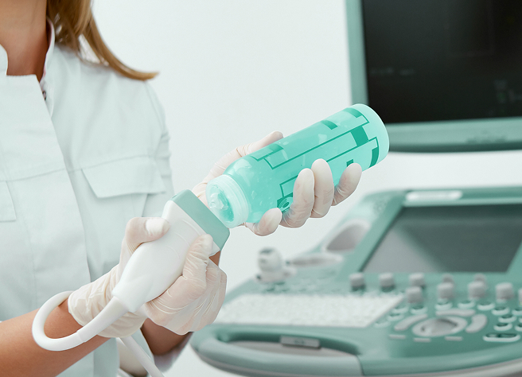

УЗИ ОРГАНОВ МАЛОГО ТАЗА
Безопасный, неинвазивный метод визуализации, позволяющий оценить состояние:
- У женщин: матки, яичников, шейки матки
- У мужчин: простаты, семенных пузырьков
- Общие структуры: мочевого пузыря, мочеточников, лимфоузлов, сосудов
Стоимость услуги
1 900 ₽

ПРЕИМУЩЕСТВА УЗИ ОРГАНОВ МАЛОГО ТАЗА
-
БЕЗОПАСНОСТЬ(отсутствие лучевой нагрузки)
-
ВЫСОКАЯ ИНФОРМАТИВНОСТЬ
-
ВОЗМОЖНОСТЬ МНОГОКРАТНОГО ПРОВЕДЕНИЯ
Показания к применению
Что может выявить УЗИ ОМТ
Рекомендации
после исследования
- При выявлении патологий — консультация гинеколога, уролога или онколога.
- Повторное УЗИ — по назначению врача

ответы на частые вопросы
-
Какими методами проводится УЗИ органов малого таза?
Существует 3 метода проведения УЗИ органов малого таза:
- Трансабдоминальное (ТА): - Датчик перемещают по животу. - Требует наполненного мочевого пузыря. - Подходит для общего обзора.
- Трансвагинальное (ТВ) – для женщин: - Датчик вводят во влагалище. - Не требует подготовки. - Даёт более детальное изображение.
- Трансректальное (ТР) – для мужчин: - Датчик вводят в прямую кишку. - Позволяет детально оценить простату.
-
Сколько времени занимает УЗИ ОМТ?
Длительность процедуры составляет 15–30 минут в зависимости от исследуемой области и сложности случая.
-
Как подготовиться к УЗИ?
Подготовка зависит от метода проведения УЗИ:
Трансабдоминальное УЗИ:
- За 1 час выпить *1–1,5 л воды* (мочевой пузырь должен быть наполнен).
- Лёгкая диета за день до исследования (исключить газообразующие продукты).
Трансвагинальное/трансректальное УЗИ:
- Мочевой пузырь должен быть *пустым*.
- Очистительная клизма — только по указанию врача (редко).
-
Есть ли противопоказания для проведения УЗИ?
УЗИ является безопасной процедурой и не имеет серьёзных противопоказаний. Однако, если у вас есть аллергия на гели, используемые во время исследования, сообщите об этом врачу.
не откладывайте лечение, запишитесь на консультацию
Оставьте свой номер телефона, мы перезвоним, ответим на все вопросы и подберем подходящее обследование.
Мы находимся в центре города
контакты
г. Казань, ул. Курашова, д.20
Проложить маршрут